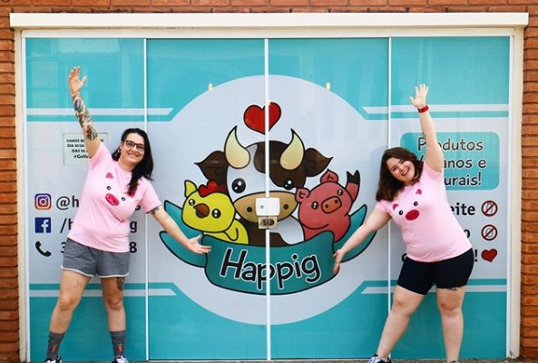

Sobre a Happig
Localizada próximo ao Bauru Shopping, a Loja Happig traz para o mercado o que há de melhor para pessoas veganas, ovolactovegetarianas, intolerantes a produtos de origem animal ou apenas curiosas. Fundada em 2014, a Happig já é destaque na cidade de Bauru e, com sua loja online, conquista novos clientes pelo Brasil todo a cada dia.
Nossa missão é: "Fornecer produtos veganos de qualidade aos nossos clientes".
Oferecemos produtos alimentícios, bebidas, higiene pessoal, produtos sem glúten, entre outros. Nosso atendimento é excelente e nós conhecemos nossos clientes como ninguém, garantindo qualidade e satisfação nas compras.
Nossa localização
Ficamos pertinho do Bauru Shopping!
Benefícios
- Atendimento personalizado
- Tudo 100% vegano
- Loja físíca em Bauru
- Produtos de qualidade
- Preço justo
- Zero crueldade
Aqui tem uma receitinha onde te ensinamos a fazer um risoto incrível, cremosinho e, é claro, vegano!